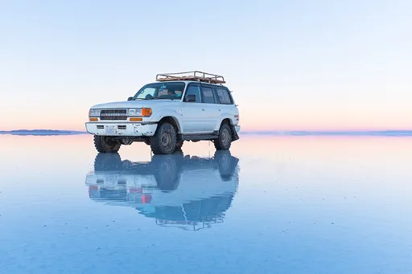
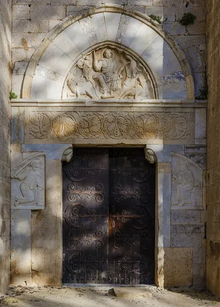
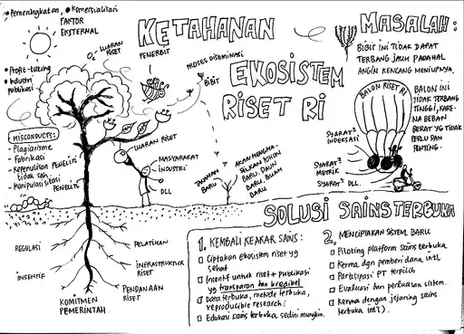
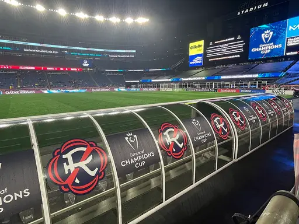
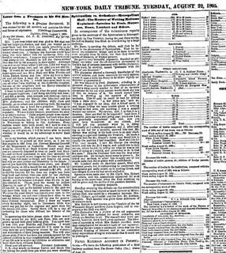
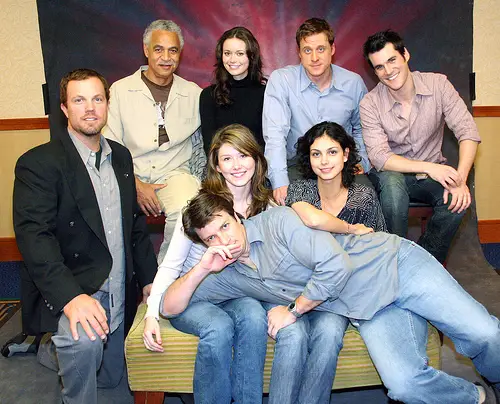
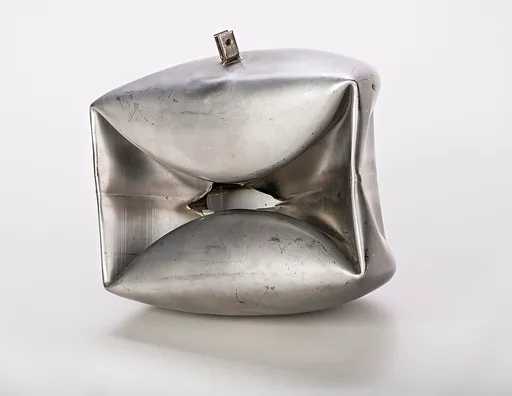
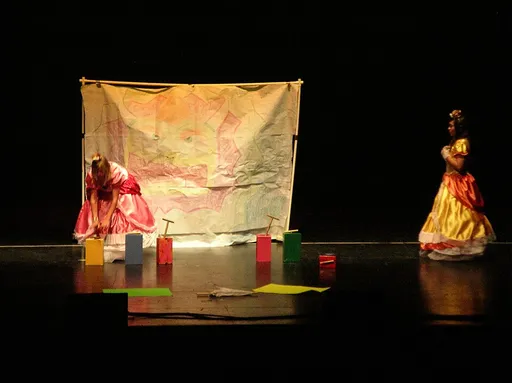

Reject an image by adding its slug to public/charades/charades-hard/reject.txt (append ! to keep it word-only), then re-run node scripts/genimages.mjs.
Recycling recycling CC BY-SA 4.0 · Infrogmation · source

Reflection reflection CC BY-SA 4.0 · Christopher Crouzet · sourceRegret regret Public domain · Adobe Firefly · source

Relief relief CC BY 4.0 · Christian Ferrer · source

Resilience resilience CC0 · Dasaptaerwin · sourceRestlessness restlessness CC BY 3.0 · Dg-505 · source

Revolution revolution Public domain · Peter Theodores · sourceRipple effect ripple-effect CC BY 2.0 · Sergiu Bacioiu from Romania · sourceRomance romance CC0 · Starson fernandes sousa · source

Sarcasm sarcasm Public domain · As was dictated to the Cincinnati Commercial by former slave Jordan Anderson (various spellings can be found) · source

Serenity serenity CC BY 2.0 · Flickr user RavenU · source

Shock shock CC BY-SA 3.0 · CEphoto, Uwe Aranas · sourceShyness shyness Public domain · J. C. S. Aune, Portland · source

Spilled milk spilled-milk CC BY 3.0 · BrokenSphere · sourceStage fright stage-fright Public domain · Copyrighted by Warner Bros. Inc. · source